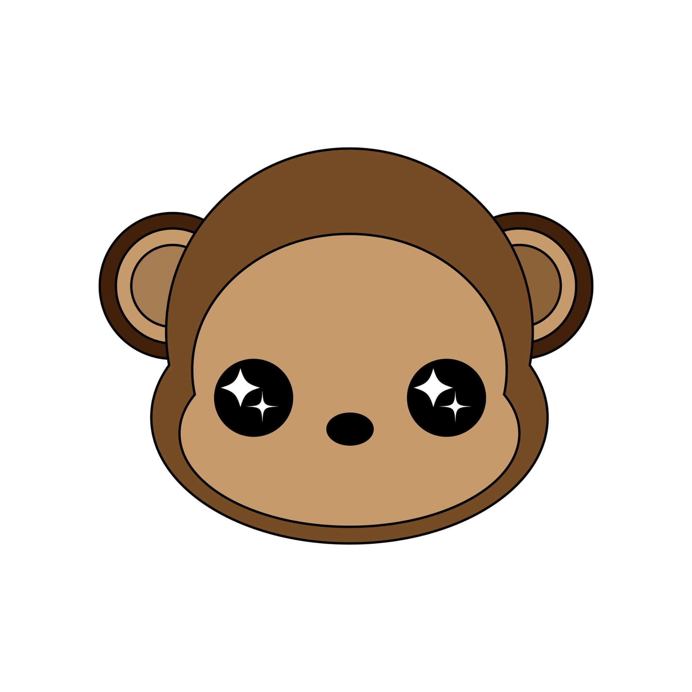

01 / 05
Personal Brand Project · 2022
Funky Munky was an online graphic-tee brand for Gen Z audiences, created as a senior-high academic enterprise during the COVID-19 period. The brand used affordable apparel to communicate youth empowerment, LGBTQ+ support, and practical health messages.
I designed the shirts, coordinated with a supplier, organized product shoots, managed sales and marketing, and created launch content. The project earned ₱30,000 in sales, and surplus stock was donated to a local orphanage.
Logo showcase

Launch teaser